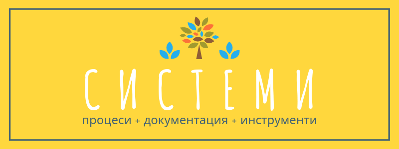

Системи и процеси, основата на професионализма
Всеки бизнес се основава на процеси, които трябва да се извършват със същата ефективност и повтаряемост ден след ден.
Затова управлението им не трябва да се оставя на случайността.
Дори и да ги познавате отлично, хубаво е всичко да се документира. Подробностите се забравят, а рано или късно ще се наложи да прехвърлите част от отговорността на трети страни.
Затова дори да сте сам юнак на коня, организирайте дейността си около функции, а не около хората, които ги изпълняват.
Така създадените системи ще ви помогнат винаги да откривате нужните информация, материали или енергия, които ви липсват.
Те не ви позволяват да забравите или изпуснете среща. Напомнят ви ако трябва да осъществите някаква комуникация с партньори, сътрудници или клиенти.
Но при създаването им също има някои тънкости. Например ако се приемат прекалено буквално, може да блокират естествения ход на дейността на тези, които ги следват.
Процесите описват нужните подготовка, стъпки и задачи, които трябва да се предприемат както и определеното време, което отнемат.
Системите правят всичко по- конкретно, а казват, че ако не можеш да го измериш, не може да го подобриш: важи за неща като продуктивност, писане, физическа активност или дори сън.
Повтаряемостта, вградена в системите ни помага да си изградим ритуали, които от своя страна ни помагат да се настроим мигновенно за задачата, която ни предстои.
Какво е система?
Системата се състои от процесите, които протичат в хода на деня или годината плюс инструментите, които ви помагат да ги извършвате ефективно и неотменнно.
Системата е да знаеш каква е следващата стъпка дори да си уморен, изплашен или затрупан с работа.
Системата е да не започваш всеки нов проект с празен лист.
Системата трябва да може да се повтори и да се предаде на трети лица.
Съществуват различни системи.
Системите за продуктивност ви помагат да свършите задачите си благополучно и навреме.
Системите за производство организират оперативните процеси.
Системите за бизнес ви помагат да организирате функциите на компанията или начинанието ви- от производсто до продажби.
Всеки компонент на системата служи за решаване на проблем, който вероятно срещате всеки ден, или за предотвратяване на пилеене на ресурси.
Техники и инструменти
Някои техники и инструменти, които се ползват при създаването на системи са:
- GTD (Getting Things Done): сортиране на задачите по важност и спешност
- помодоро: 25- минутни сесии с последваща почивка
- не прекъсвай веригата
- списък със задачи
- календар
- буджо (bullet journal): тефтер с цели, задачи и ангажименти
- канбан табло: преместване на задачите според степента им на завършеност
- кайзен: малки подобрения, големи постижения
… а за по- сериозни промишлени или софтуерни предприятия се добавят:
- стегнато производство (lean): елиминиране на производствените загуби
- пока-йоке: елиминиране на грешки
- шест сигма: елиминране на дефекти.
Минимумът
За да организирате работния си процес ви трябват най- малкото:
- списък с непосредствените и стратегическите задачи (to do): може да бъде на хартия или в компютъра, имейл, приложение или календар с категории като днес, по- късно тази седмица, бъдеще, делегирани и свършено или според нивото на внимание, което изискват;
- място да държите идеите си: документ, тефтер с изрезки, приложение за бележки, флаш карти или ментална карта;
- място, където да пазите статии и източници за после (отметки, Evernote): на всеки етап от кариерата или бизнеса ви трябват различни съвети и ресурси, така че не избързвайте да четете за инвестиционни методи преди да имате 100 лева спестявания;
- подходящите инструменти: няколко може да ви свършат работа, но ако отговарят на изискванията и предпочитанията ви ще сте по- ентусиазирани.
За организиране
Да се трудиш по нещо си сам зависи най- вече от волята и методичността ви, но трика е да държите всичко под контрол ако има намесени други хора изисква повече предвидливост.
Основното ви средство да се справите с задачата са имейлите и най- вече така наречените canned emails да кажем в Gmail (включете ги като идете в Settings > Labs > Enable), които представляват шаблони за най- често срещаните ситуации от насрочване на среща до напомняне за плащане.
Друг вариант за организиране е общ график в Google Calendar, iCal или Outlook или да дадете възможност на клиенти и сътрудници да си записват час чрез услуга като Calendly например.
Може и да имате табло по методологията канбан на стената в офиса, в Trello или на интранета.
За общофирмени въпроси, може да създадете уики.
Но най- полезни в бизнеса са системите при управлението на отделите, тъй като се изисква извършване на последователност от сложни действия.
Във всяка фирма има четири основни типа дейности:
- администрация
- производство
- маркетинг
- продажби.
Те могат да се разделят на съставни части. Някои примери за такива подсистеми са: обучаване на новонаети, водене на счетоводство, следене на наличностите, намиране и печелене на клиенти и подготвяне и предаване на пратки.
За общуване
Възможно е в началото на кариерата ви във фирма или при предоставянето на услуги, да се оправяте как да е в крачка. И за известно време може и да сработи, но постенно ще започнете да забравяте срещи или материали, да се чувствате претоварени и да изглеждате разсеяни.
Ако работите без система ще изглеждате неорганизирано и непрофесионално пред мениджъри и клиенти.
На всеки, които се занимава с някакъв страничен проект или бизнес ще ви трябва система за:
- приоритизиране на задачите;
- наемане на сътрудници за постоянно или за определена задача;
- координиране на работни сесии и съвещания;
- запазване на час при вас: формуляр или начин лесно да си насрочат среща или конслутация;
- въвеждане на новите клиенти в процеса ви: например изпратете пакет за нови клиенти с политики за плащане, анулиране, описание как ще работите заедно;
- събиране на информацията, която ви е нужна (чрез имейл, въпросник, опознавателно обаждане);
- подготовка за извършване на основната работа;
- провеждане на консултацията или урока или изпълняване на поръчката;
- поддръжка: отговаряне на запитвания и оплаквания, FAQ, работни часове, колко бързо отговаряте, връщане на пари;
- изпращане на фактурата.
Звучи ви страхотно и точно от каквото имате нужда, но не е достатъчно? Тогава отидете на обучението по Бизнес системи.